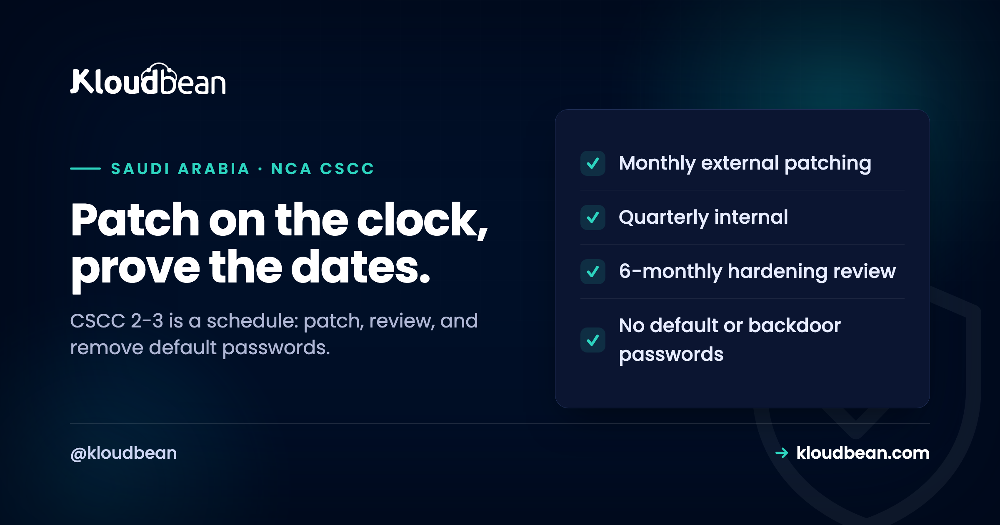

NCA CSCC Hardening and Patching: The 2-3 Controls, on a Schedule

If your systems fall under the NCA's Critical Systems Cybersecurity Controls, the hardening-and-patching subdomain is one a reviewer can check almost mechanically, because it is written as cadences and concrete requirements rather than principles. When did you last patch the internet-facing systems? When did you last review the hardening configuration? Are there still default or hard-coded passwords anywhere? These are not judgement calls, they are dates and yes-or-no facts, which is exactly why they get audited hard. This guide walks the CSCC 2-3 requirements in plain terms and shows where a managed platform carries the schedule for you and where the responsibility stays yours.
The CSCC 2-3 subdomain sets fixed cadences. Patch external, internet-facing critical systems at least monthly, and internal systems at least quarterly, with critical vulnerabilities remediated as soon as possible (control 2-3-1-3). Harden systems to a secure baseline, and review that configuration and hardening at least every six months (2-3-1-6). Remove hard-coded, backdoor, and default passwords entirely (2-3-1-7). And keep privileged administration on an isolated management network (2-3-1-4). The point of the subdomain is that security is a schedule you keep and can evidence, not a one-time setup.
Why hardening and patching is its own subdomain
The controls here exist because of how critical systems actually get breached, which is rarely dramatic.
The overwhelming majority of real compromises are not novel exploits. They are a known vulnerability that had a patch available for months, or a default administrator password that was never changed, or a service left running that nobody needed. The CSCC devotes a subdomain to this precisely because it is both the most common way in and the most preventable. What makes 2-3 distinctive is that it is written as a schedule. Other controls describe a state you should be in; these describe a rhythm you must keep, patch by this interval, review by that one, and be able to show the dates. That shifts the work from "set it up once" to "operate it on a clock," which is a different discipline and the one that lapses first when a team is busy. The rest of this article is those cadences, one at a time.
Patch on the clock: monthly external, quarterly internal (2-3-1-3)
This is the control with the most specific numbers, so it is the one to get exactly right.
Control 2-3-1-3 sets minimum patch cadences by exposure. External, internet-facing components of a critical system must be patched at least monthly, because they are the most reachable and therefore the highest risk. Internal systems must be patched at least quarterly. And critical vulnerabilities are not held for the next cycle, they are remediated as soon as possible, out of band if needed. The logic is risk-weighted: the more exposed a system is, the more often it must be brought current. Reading it the right way, monthly patching of your internet-facing tier is a floor, not a target, and the recognisable failure here is the server that was patched at launch and then left for a year because nothing appeared broken. That gap is invisible right up until a known vulnerability is used against it. A managed patching process that runs on the required cadence is the clean way to meet this, so the schedule does not depend on someone remembering.
Remove default, hard-coded, and backdoor passwords (2-3-1-7)
Short control, enormous impact, and one people assume is already handled when it often is not.
Control 2-3-1-7 requires that hard-coded, backdoor, and default passwords be removed. Default credentials on a device or service, a password committed into source code, or a vendor backdoor account are all direct routes in that no firewall will stop, because they are legitimate credentials as far as the system is concerned. The requirement is to hunt them down and eliminate them: change every default before a system goes live, get secrets out of code and into a proper secrets store, and remove any backdoor or shared account. This pairs with good secrets management on the application side, which is where hard-coded credentials usually hide. The infrastructure side of this, no default logins on the servers and services a platform provisions, is something a managed platform can enforce as a baseline. The application side, credentials in your own code and config, stays with you, and it is worth an explicit sweep rather than an assumption.
Harden the build, and review it every six months (2-3-1-6)
Hardening is the setup; the review cadence is the part teams forget.
The CSCC expects critical systems to be hardened to a secure baseline, which in practice means a recognised standard like the CIS benchmarks: disable unnecessary services, close unused ports, apply secure configuration defaults, and reduce the attack surface to what the system actually needs. But 2-3-1-6 adds the part that turns hardening from a one-time task into a control: the configuration and hardening must be reviewed at least every six months. Systems drift. Someone opens a port for a debug session and forgets it, a service gets enabled for a migration and stays on, a configuration is loosened under deadline pressure. The six-monthly review catches that drift before it becomes the way in. So the requirement is really two things: harden to a baseline at build, and re-verify against that baseline on a schedule. A managed platform can apply and maintain the baseline hardening; confirming your application's own configuration hasn't drifted is a shared responsibility.
The isolated management network (2-3-1-4)
One more 2-3 control, though its natural home is alongside the network domain.
Control 2-3-1-4 calls for privileged administration to happen over an isolated management network, so administrators do not reach critical systems over the same paths as ordinary traffic, and never by exposing admin access to the open internet. Because this sits so closely with network segmentation, it is covered in depth in CSCC network segmentation, which walks the bastion-and-management-network pattern. The short version for this subdomain: the most powerful access must travel the most controlled route, typically a bastion or jump server reached with multi-factor authentication, with direct administrative access from the internet blocked.
Where a managed cloud fits, and where you own it
Most of the 2-3 subdomain is operational discipline on infrastructure, which is exactly what a managed platform is built to carry.
A managed cloud can run the patching on the required cadence, apply CIS-style hardening with default credentials removed, keep unnecessary services disabled, and maintain the isolated management access, delivered on managed engagements to the schedule these controls set, with the dates recorded as evidence. On Kloudbean these are part of how a managed enterprise engagement is run: monthly patching of the internet-facing layer, hardened baselines, no default logins, and privileged access through a controlled path, in-Kingdom where required. The honest boundary: the platform can carry the cadence and the baseline for the infrastructure it manages, but your own application, its dependencies, its configuration, and any credentials inside your code, is patched and hardened on your side of the line. No platform can update a vulnerable library in your app or find a password you committed to your repository. What it removes is the operational burden of keeping the infrastructure on the clock, which is the part that most often slips. The framework overview is in the NCA CSCC guide, and the CSCC document is public, so you can cite 2-3-1-3, 2-3-1-6, and 2-3-1-7 directly in your own documentation.
Two or three things worth reading next
This is one subdomain of a bigger framework: start with the NCA CSCC guide, and prepare with the critical systems hosting checklist. The management-network control connects to CSCC network segmentation, and the testing cadence that finds what needs patching is in CSCC vulnerability assessment and penetration testing. The general, non-critical-systems version of this is the server hardening checklist, and credentials belong in secrets management.
Controls you can actually evidence.
Kloudbean delivers the infrastructure alignment behind these controls on managed enterprise engagements: centralised logging, immutable retention, private database access, MFA, and in-Kingdom hosting where required. Certification is assessed against your organisation, so governance and application work stay with you.
- ✓ In-Kingdom (Dammam) available
- ✓ Centralised logging
- ✓ Immutable log storage
- ✓ Private database access
- ✓ MFA and least privilege
- ✓ Automatic backups
- ✓ Evidence as managed reports
In-Kingdom plans from $36/mo on Google Cloud Dammam · Free migration assistance · Free trial
FAQ
How often does CSCC require patching?
Control 2-3-1-3 sets minimum cadences by exposure: external, internet-facing components of critical systems must be patched at least monthly, and internal systems at least quarterly. Critical vulnerabilities are not deferred to the next cycle but remediated as soon as possible, out of band if necessary. The cadence is risk-weighted, so the more exposed a system is, the more frequently it must be brought current, and the stated intervals are minimums rather than targets.
What does CSCC control 2-3-1-7 require?
It requires the removal of hard-coded, backdoor, and default passwords. Default credentials, passwords committed into source code, and vendor backdoor accounts are all legitimate credentials from the system's point of view, so no firewall stops them. The control asks you to change every default before go-live, move secrets out of code into a proper secrets store, and eliminate backdoor or shared accounts. It is short but among the highest-impact controls, because these credentials are a direct route in.
How often must hardening be reviewed under CSCC?
At least every six months, per control 2-3-1-6. Systems are hardened to a secure baseline at build, typically using a standard like the CIS benchmarks, but configurations drift over time as ports are opened, services enabled, and settings loosened. The six-monthly review re-verifies the system against its baseline to catch that drift before it becomes an exposure. So hardening is two obligations: establish the baseline, and re-check it on the required schedule.
What is a hardened baseline?
It is a secure configuration standard that reduces a system's attack surface to only what it needs: unnecessary services disabled, unused ports closed, secure defaults applied, and default credentials removed. Recognised benchmarks such as the CIS benchmarks are the common reference. Hardening to a baseline means the system starts in a known-good, minimal-exposure state, and the CSCC then requires that state to be reviewed periodically so it does not erode.
Can a managed cloud handle CSCC patching for me?
It can carry the infrastructure side: patching the servers and managed services it provisions on the required cadence, applying hardened baselines, removing default logins, and recording the dates as evidence. What it cannot do is patch your application's own code and dependencies or find a credential you hard-coded, because those live in your side of the deployment. So a managed platform handles the operational cadence for the infrastructure, while your application's patching and configuration remain your responsibility.
What is the difference between this and a normal patching routine?
A normal routine is good practice; CSCC 2-3 makes it an auditable requirement with specific minimum cadences and a review schedule you must be able to evidence. A general setup might patch when convenient; a critical-systems deployment must patch internet-facing systems at least monthly, review hardening at least six-monthly, and prove the dates. The discipline is the same in spirit, but the fixed intervals and the evidence requirement are what a reviewer checks.
Does patching on cadence make my critical system compliant?
No. Patching and hardening are one subdomain within the CSCC, which spans identity and access, network security, encryption, logging, backups, resilience, and more, and the CSCC itself extends the ECC framework. Keeping the infrastructure patched and hardened on schedule is necessary and among the most effective controls, but it is one piece of a larger assessment made against your whole system and organisation, not a compliance finish line on its own.
Can I cite the CSCC 2-3 control numbers in my documentation?
Yes. The NCA's Critical Systems Cybersecurity Controls document is published openly with no sharing restrictions, so you can reference control numbers like 2-3-1-3 for patch cadence, 2-3-1-6 for the six-monthly hardening review, and 2-3-1-7 for removing default passwords directly in your own compliance documentation. Mapping each infrastructure practice to its specific control is exactly the traceability a reviewer expects to see.